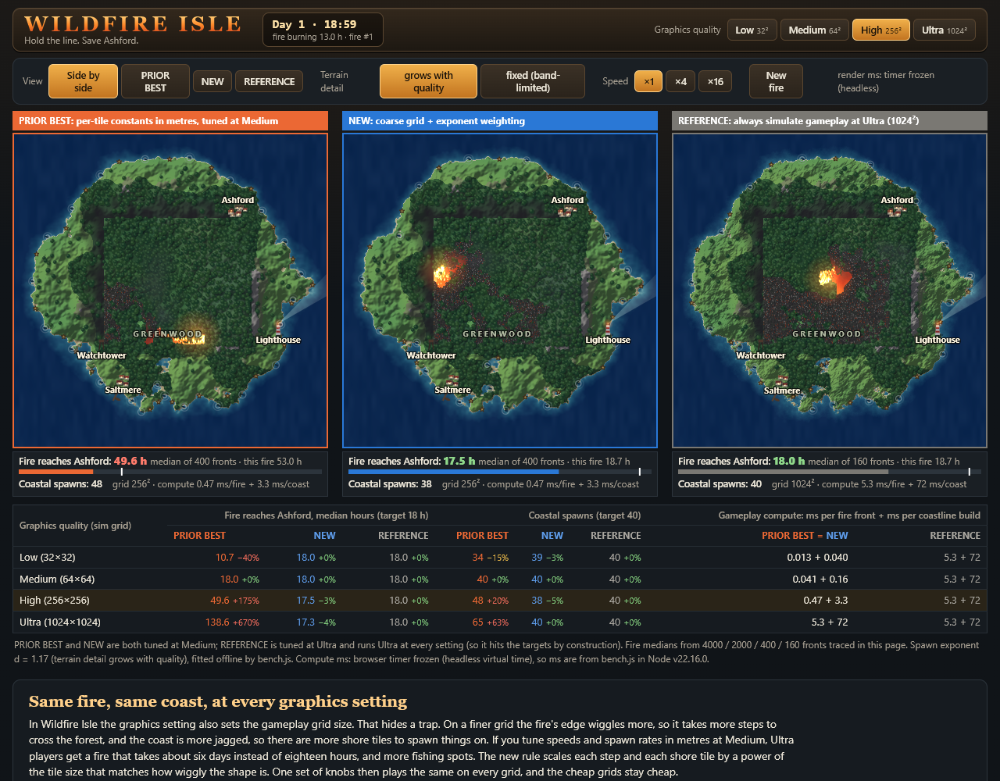
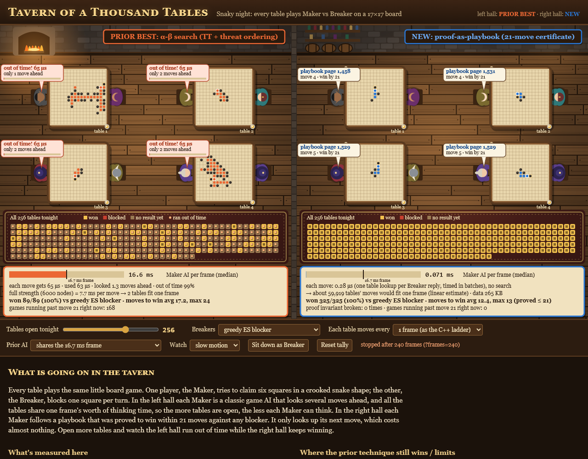
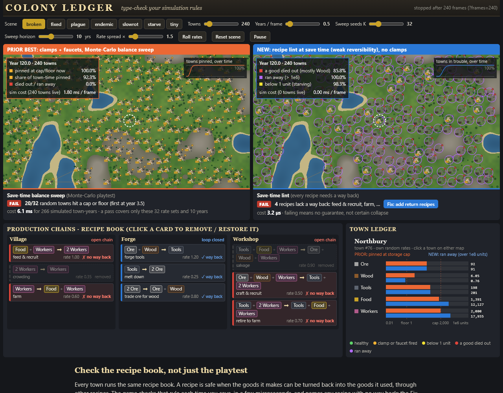
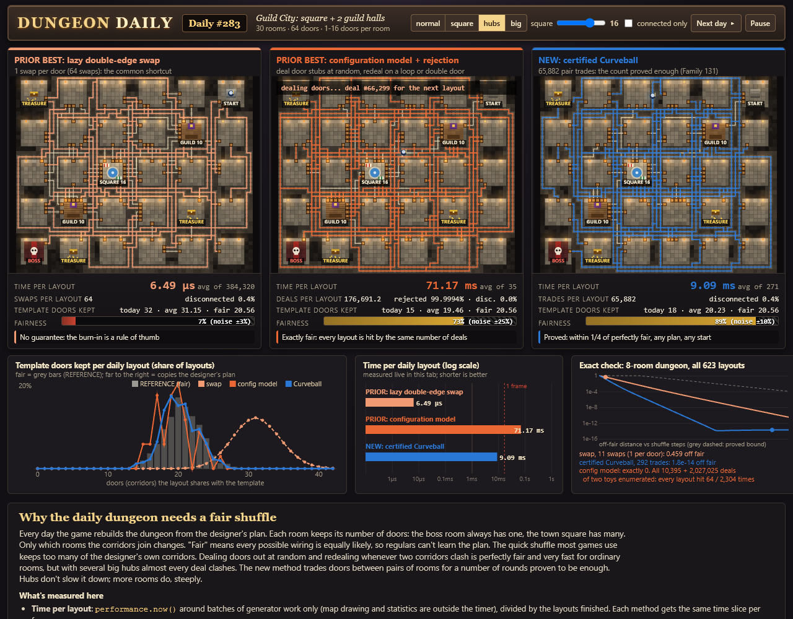
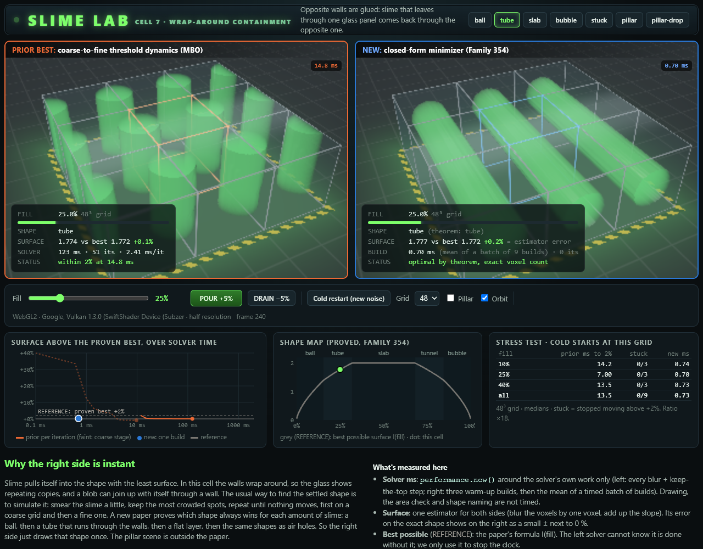

Five games: best prior technique vs the new math
Each game runs the same scene with the strongest technique a game developer would ship today and with the technique built on the new math, side by side, with live measurements. Click a title to play. Every page works offline; the README in each folder has the full numbers and the commands to reproduce them.

Wildfire Isle
Same gameplay at every graphics setting · fractal exponent weighting (Family 223 + the general recipe)

Tavern of a Thousand Tables
Proof as playbook · the Snaky 21-move certificate (Family 187)

Colony Ledger
Type-check your simulation rules · weak reversibility ⇒ permanence (Family 149)

Dungeon Daily
Certified randomness · Curveball with the proved trade count (Family 131)

Slime Lab
Known best answer instead of a solver · isoperimetric sets of the flat 3-torus (Family 354)